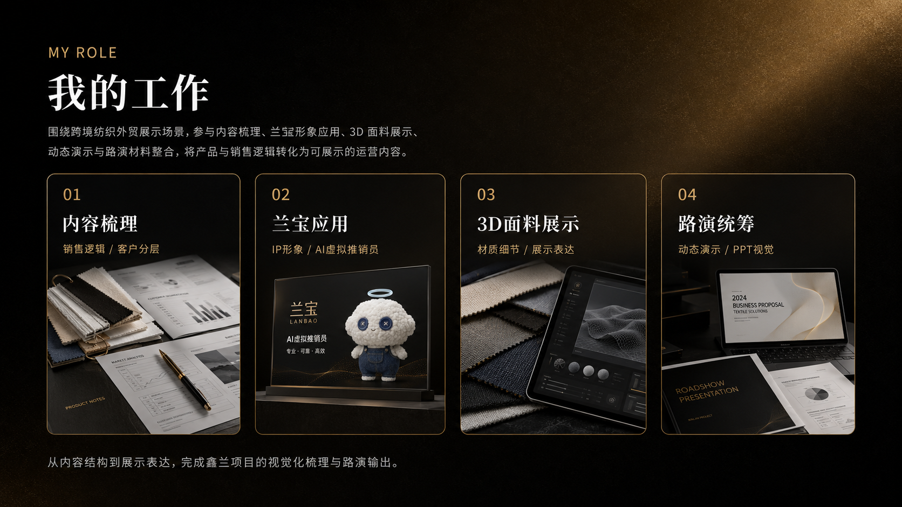
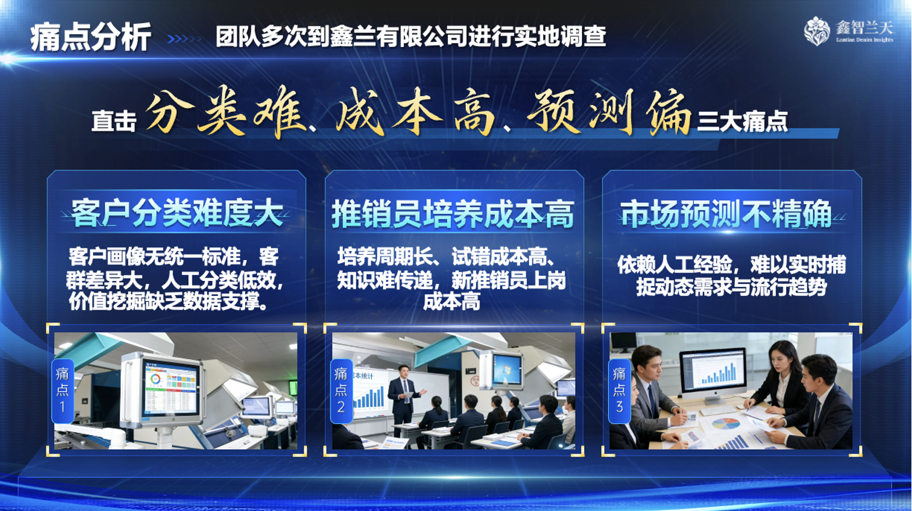
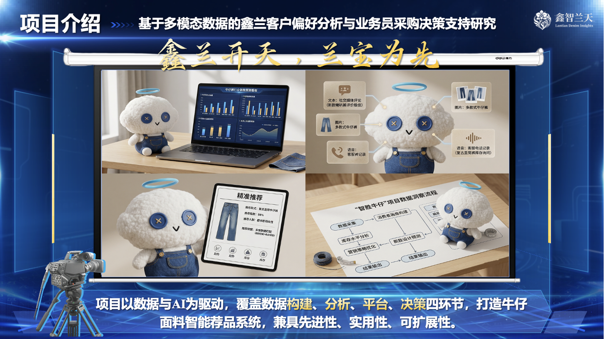
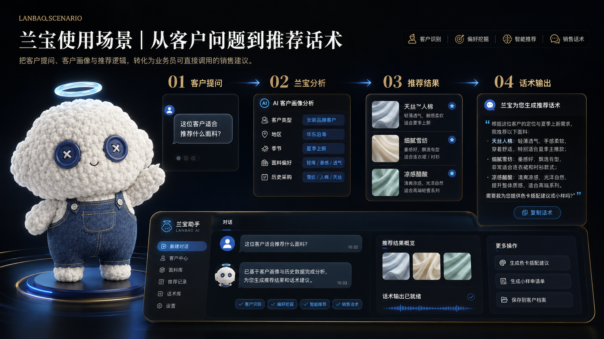

Xinzhi Lantian Case Review
跨境纺织外贸销售辅助内容 鑫智兰天
把客户数据、销售经验与 AI 智能体转化为可调用的推荐辅助工具
围绕纺织外贸销售场景，将客户数据分析、智能推荐、AI 助手与数字人培训整合为一套销售辅助方案。
鑫智兰天｜Hero 视频位assets/hero-cover.mp4

我的工作图片位assets/section-work.pngPROJECT INSIGHT
项目洞察｜传统纺织销售为什么需要 AI 辅助

项目洞察图片位assets/section-background.pngPROJECT OVERVIEW
项目概述｜鑫兰开天，兰宝为先

项目概述图片位assets/xinlan-overview.pngSOLUTION HIGHLIGHTS
方案亮点｜从数据判断到兰宝销售辅助

兰宝使用场景图片位assets/lanbao-scenario.png